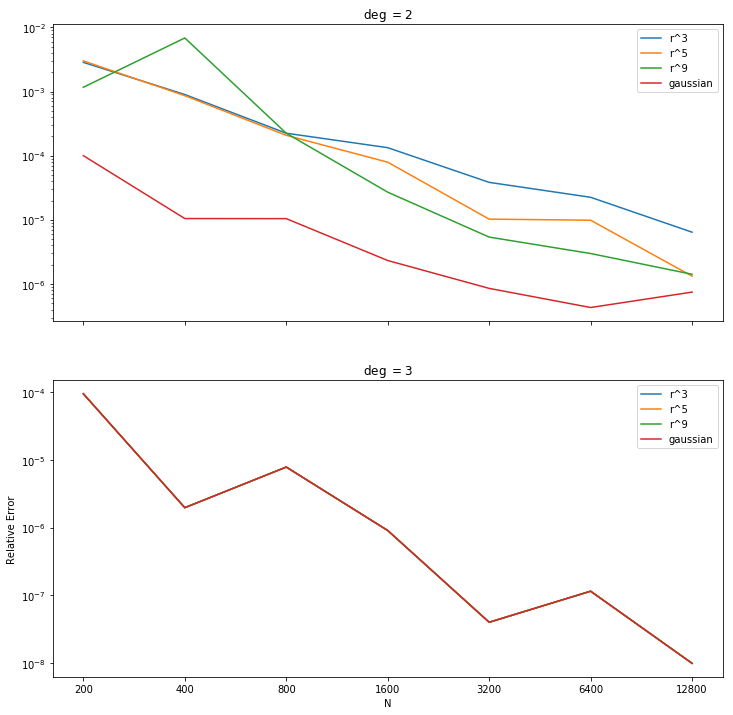

At the meeting we reviewed Sage's results for the steady state solution to $\Delta_\SS u = f(x)$. There was an interesting case where $f$ was a low degree spherical harmonic for which the choice of RBF was irrelevant when augmented with sufficiently high degree spherical harmonics. We formed a hypothesis as to why. We also reviewed Daniel's 1-D advection results for time dependent wave-speed. Lastly we discussed attending the upcomming Pacific Northwest Numerical Analysis Seminar (PNWNAS) being held this October in Vancouver.
- Tasks
- Daniel
- Sage
- Augmenting with Spherical Harmonics
- References
The next meeting is scheduled for on September 6th at 10 am.
Tasks
Daniel
- Modify code so that the wave speed is a function of both time and space.
Sage
- Learn and implement the RBF-OGr method.
- Test our hypothesis explaining why the choice of RBF is irellevant in the special case discussed below.
- Test the difference between scaling and not scaling the spherical harmonic terms for a large node set and a high degree forcing function. One test should be sufficient.
- Find an example where $\phi(r)=r^9$ attains better accuracy than the gaussian.$
- Add the orders of convergence to our plots.
- Research the Skeel Condition Number[1].
- Research sphereical harmonics.
Error is independant of RBF?
The two plots below show the error of our method using a variety of RBFs augmented with up to 2nd and 3rd degree polynomials respectively for the problem $\Delta_\SS u = Y_{2,2}$. In the second plot, the errors seem to be independent of the choice of RBF. We susspected that this is due to the use of a second degree spherical harmonic and tested it by using $Y_{4,-3}$ (not shown here), and indeed the error depended on the choice of RBF up to 5th degree terms. This seems to confirm our suspicion that the phenomenon is due to the particular form of the forcing term, but does not explain why?
Grady's hypothesis is that the gradient is recovered exactly by the shperical harmonic basis terms but error is introduced by iterated differentiation. This will be tested in Experiment 003.
References
- Nicholas J. Higham. Accuracy and Stability of Numerical Algorithms. University of Manchester, 2002. URL: https://epubs.siam.org/doi/abs/10.1137/1.9780898718027.fm, arXiv:https://epubs.siam.org/doi/pdf/10.1137/1.9780898718027.fm, doi:10.1137/1.9780898718027.fm.